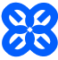

Рух Єдині — проєкт освітньої та психологічної підтримки у переході на українську мову.
«Єдині» – це навчальні курси, що тривають 28 днів та охоплюють онлайн-завдання, розмовні клуби, корисні вебінари. «Єдині» формують спільноту однодумців для обговорення української історії, культури і заради підтримки мовної стійкості.
Рух створений за участі Ініціативи «Навчай українською» та за підтримки ГО «Українська гуманітарна платформа» у квітні 2022 року.
Наша місія — об'єднати українців за допомогою мови.
Бути джерелом знань – допомогти усвідомити українську мову, історію та культуру як спільні цінності, які формують порозуміння і посилюють довіру між українцями заради безпеки країни, консолідації та швидкого економічного розвитку.
Стати маяком, який допомагає усім зацікавленим популяризувати мову, історію, культуру.
Ми збираємо 3 мільйони гривень
Саме ця сума допоможе Руху «Єдині» системно працювати у 2023 році, маючи інституційну підтримку та достатньо ресурсів, аби втримати команду та забезпечити якість матеріалів для навчання, та для того, щоб допомоги учасникам здійснити комфортний перехід на українську.
витрати на проєкт щомісяця - 250 000 грн 12 місяців 2023 року - 3 000 000 грн
Чому варто донатити на «Єдині» ?
Ми розробили та викладаємо:
Курс з переходу на українську мову
Граматичний курс української мови
Курси проєкту «Єдині» містять:
щоденні завдання та навчальні матеріали;
вебінари й онлайн-лекції;
розмовні клуби у зручному форматі (наживо чи онлайн);
поради психолога — як подолати мовний барʼєр;
техніки легкого запамʼятовування нових слів;
пояснення, звідки береться суржик та як його позбутися
спеціальні рекомендації та призи від амбасадору курсу
Наші принципи та головні цілі:
єдність усіх українців у прагненні підтримки та поширення української мови в Україні й за кордоном;
вірність Україні, любов та бажання робити свою країну кращою;
спільна ідентичність українців як один з ключових факторів єдності нашого народу;
допомога та підтримка українцям, які ще послуговуються російською мовою, у прагненні переходу на українську;
безпечне середовище і толерантність до учасників.
За рік роботи «Єдині» мають переможну статистику:
90 000 учасників разом з «Єдині» перейшли на українську.
Розмовні клуби проєкту «Єдині» працюють у 25 містах України та за кордоном — у Любліні, Варшаві, Роттердамі, Вільнюсі та Празі, Лімасолі, Гельсінкі. До «Єдиних» долучаються учасники з тимчасово окупованого Криму, звільнених населених пунктів Херсонщини та Харківщини. А також учасники з Ізраїлю, Індії, США та багатьох інших країн світу!
Тезу «Мова — на часі» підтвердили цифри: перший навчальний курс у квітні 2022 об’єднав понад 11 000 учасників.
Щомісяця до курсів проєкту доєднуються від 5 000 до 7 000учасників.
До Дня української писемності та мови «Єдині» провели форум «Українська — мова перемоги».
Запросили представників влади та дипломатичних кіл, бізнесу, освіти, видавничої справи та культури, артистів, блогерів. Кожен з них має свою мотивацію говорити українською, а отже. ставати провідниками на шляху переходу на мову для інших.
Хто це робить? Як?
До проєкту долучилися 35 членів команди, 335 вчителів, 400 волонтерів, які протягом роботи проєкту:
Розробляють програми курсу
Наповнюють їх дидактичними матеріалами
Наповнюють соціальні мережі проєкту
Контактують з лідерами думок та амбасадорами проєкту
Створюють корисні дописи для сайту проєкту та чатів спільноти
Контактують із національними та міжнародними ЗМІ
Проводять вебінари
Проводять розмовні клуби наживо та онлайн
Ви можете допомогти
Проєкт «Єдині» щодня працює на утворення стійкої та зрілої спільноти, тому нам необхідна ваша підтримка.
Фінансово
Ви можете надіслати будь-яку суму одноразовим переказом. Навіть якщо це підтримка, що дорівнює вартості однієї кави, або прокату каяка чи сапу на годину. Для проєкту «Єдині» це можливість набрати ще один курс тих, хто прагне підтримки у переході. Тож ваша фінансова підтримка дозволить нам забезпечити розвиток проєкту та досягти нашої мети – допомогти 1 мільйону українців до кінця 2024 року перейти на українську.
Підтримати
LiqPay

Мій внесок:
Вітаємо!
Щойно ви допомогли багатьом людям перейти на українську! Спасибі за те, що підтримуєте наш проєкт! Завдяки вашому внеску команда «Єдиних» зможе ще ефективніше продовжувати діяльність і об'єднувати українців за допомогою мови! Дякуємо за активну позицію, небайдужість і допомогу в розвитку нашого руху! Плекаймо українську мову та будьмо в цьому «Єдині»!